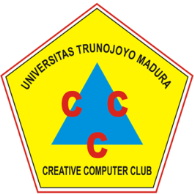
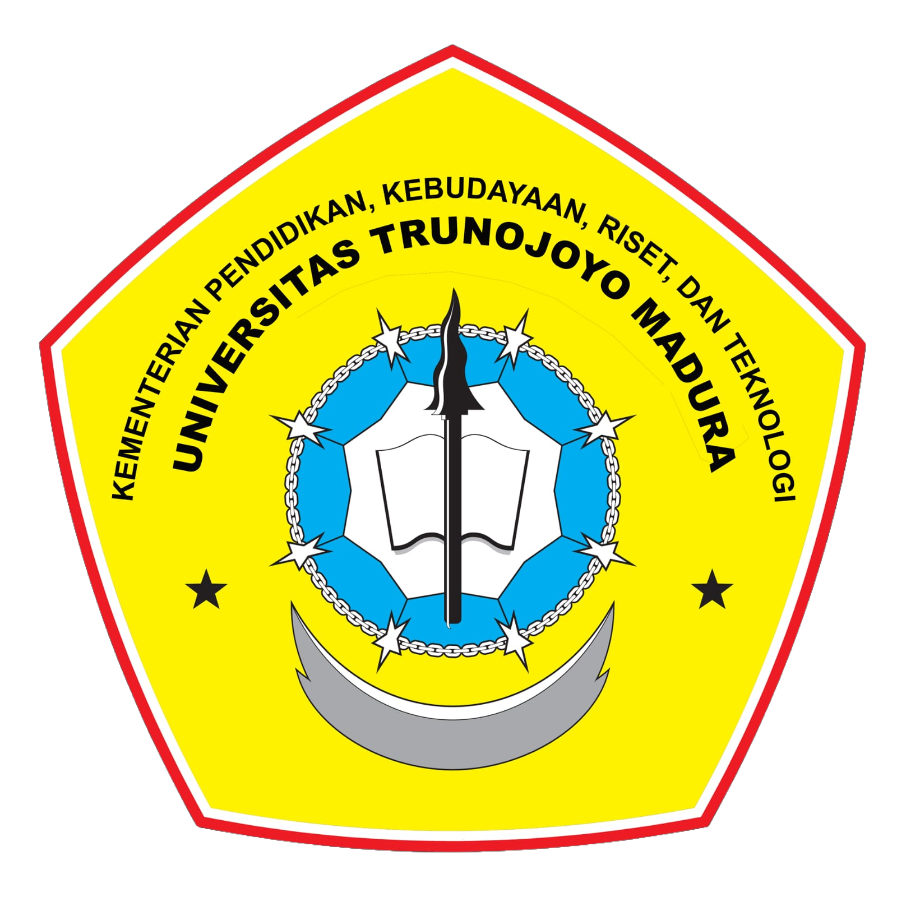

About Us
BPII Adalah Garda terdepan dari organisasi Pelajar Islam Indonesia
PII atau Pelajar Islam Indonesia merupakan Badan Utama dari organisasi ini dan memiliki 2 Badan Otonom yang membantu Badan Utama nya berkembang, yaitu Brigade PII dan PII Wati yang masing-masing memiliki peranan tersendiri.
Kita bisa berdakwah di kalangan manapun dengan kondisi apapun. sejatinya kita tetap seorang muslim.
Supported By
Tugas Standarisasi CT One
CT-One 2022
Computer Training One 2022

Tripel C
Creative Computer Club
